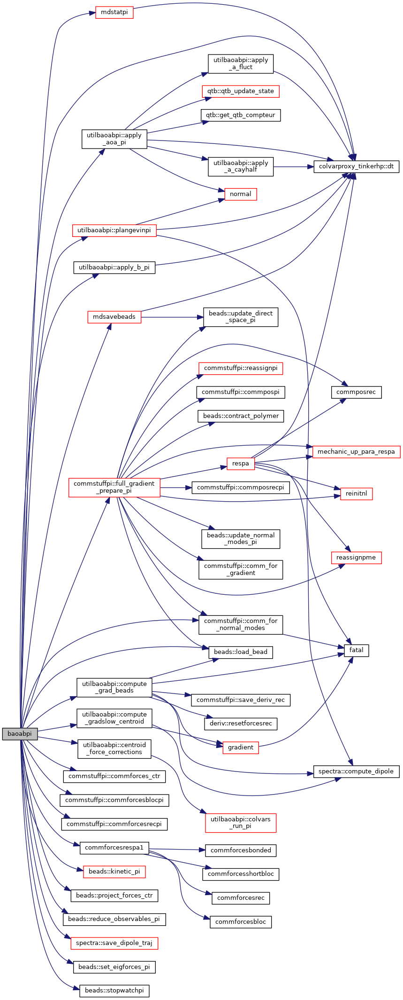
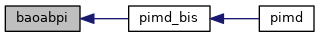

|
Tinker-HP v1.3
|
|
Tinker-HP v1.3
|
Go to the source code of this file.
Functions/Subroutines | |
| subroutine | baoabpi (polymer, polymer_ctr, istep, dt) |
| "baoabpi" performs a single PIMD time step via the BAOAB recursion formula More... | |
| subroutine baoabpi | ( | type(polymer_comm_type), intent(inout) | polymer, |
| type(polymer_comm_type), intent(inout) | polymer_ctr, | ||
| integer, intent(in) | istep, | ||
| real*8, intent(in) | dt | ||
| ) |
"baoabpi" performs a single PIMD time step via the BAOAB recursion formula
| [in] | polymer,: | polymer |
| [in] | polymer_ctr,: | contracted polymer |
| [in] | istep,: | number of timestep |
| [in] | dt,: | length of timestep |
Definition at line 30 of file baoabpi.f90.
References utilbaoabpi::apply_aoa_pi(), utilbaoabpi::apply_b_pi(), utilbaoabpi::centroid_force_corrections(), commstuffpi::comm_for_normal_modes(), commstuffpi::commforces_ctr(), commstuffpi::commforcesblocpi(), commstuffpi::commforcesrecpi(), commforcesrespa1(), utilbaoabpi::compute_grad_beads(), utilbaoabpi::compute_gradslow_centroid(), colvarproxy_tinkerhp::dt(), commstuffpi::full_gradient_prepare_pi(), beads::kinetic_pi(), beads::load_bead(), mdsavebeads(), mdstatpi(), utilbaoabpi::plangevinpi(), beads::project_forces_ctr(), beads::reduce_observables_pi(), spectra::save_dipole_traj(), beads::set_eigforces_pi(), and beads::stopwatchpi().
Referenced by pimd_bis().


 1.8.5
1.8.5